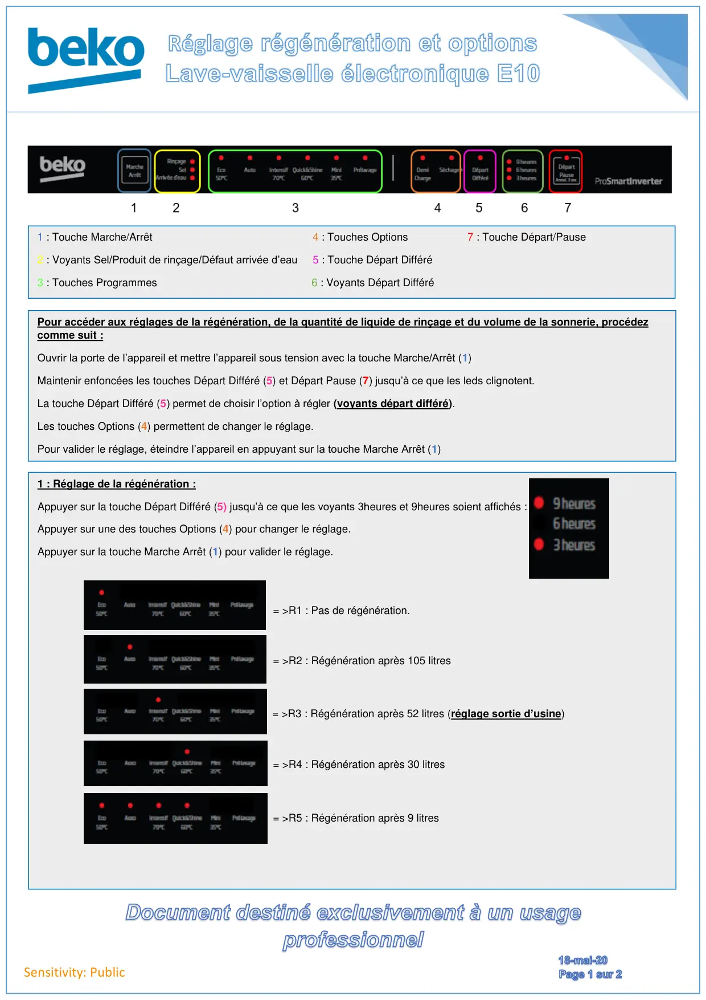
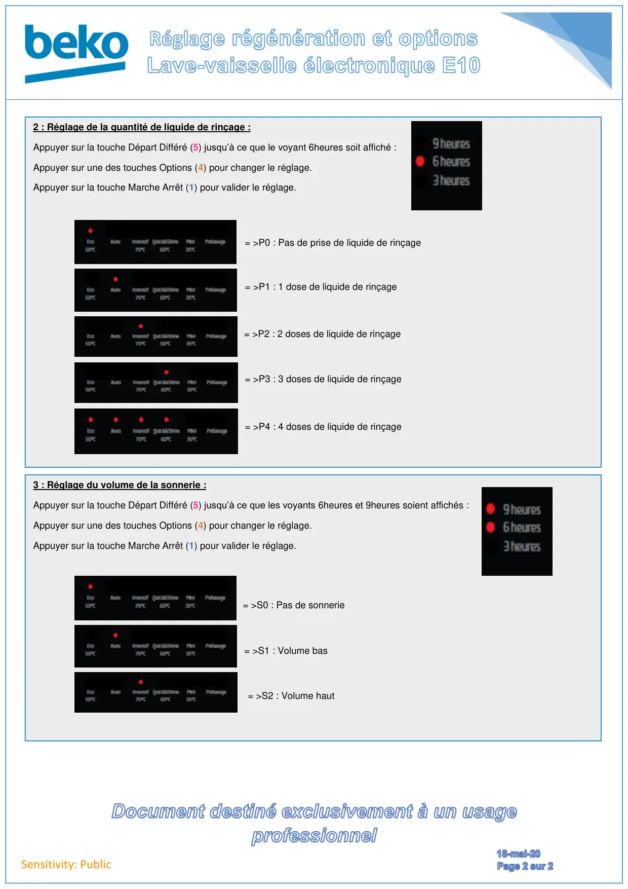

Réglage régénération lave vaisselle E10

Sensitivity: Public1 : Touche Marche/Arrêt 4 : Touches Options 7 : Touche Départ/Pause2 : Voyants Sel/Produit de rinçage/Défaut arrivée d’eau 5 : Touche Départ Différé3 : Touches Programmes 6 : Voyants Départ DifféréPour accéder aux réglages de la régénération, de la quantité de liquide de rinçage et du volume de la sonnerie, procédezcomme suit :Ouvrir la porte de l’appareil et mettre l’appareil sous tension avec la touche Marche/Arrêt (1)Maintenir enfoncées les touches Départ Différé (5) et Départ Pause (7) jusqu’à ce que les leds clignotent.La touche Départ Différé (5) permet de choisir l’option à régler (voyants départ différé).Les touches Options (4) permettent de changer le réglage.Pour valider le réglage, éteindre l’appareil en appuyant sur la touche Marche Arrêt (1)1 : Réglage de la régénération :Appuyer sur la touche Départ Différé (5) jusqu’à ce que les voyants 3heures et 9heures soient affichés :Appuyer sur une des touches Options (4) pour changer le réglage.Appuyer sur la touche Marche Arrêt (1) pour valider le réglage.= >R5 : Régénération après 9 litres= >R4 : Régénération après 30 litres= >R3 : Régénération après 52 litres (réglage sortie d’usine)= >R2 : Régénération après 105 litres= >R1 : Pas de régénération.
1 / 2
Sensitivity: Public2 : Réglage de la quantité de liquide de rinçage :Appuyer sur la touche Départ Différé (5) jusqu’à ce que le voyant 6heures soit affiché :Appuyer sur une des touches Options (4) pour changer le réglage.Appuyer sur la touche Marche Arrêt (1) pour valider le réglage.= >P4 : 4 doses de liquide de rinçage= >P3 : 3 doses de liquide de rinçage= >P2 : 2 doses de liquide de rinçage= >P1 : 1 dose de liquide de rinçage= >P0 : Pas de prise de liquide de rinçage3 : Réglage du volume de la sonnerie :Appuyer sur la touche Départ Différé (5) jusqu’à ce que les voyants 6heures et 9heures soient affichés :Appuyer sur une des touches Options (4) pour changer le réglage.Appuyer sur la touche Marche Arrêt (1) pour valider le réglage.= >S2 : Volume haut= >S1 : Volume bas= >S0 : Pas de sonnerie
2 / 2